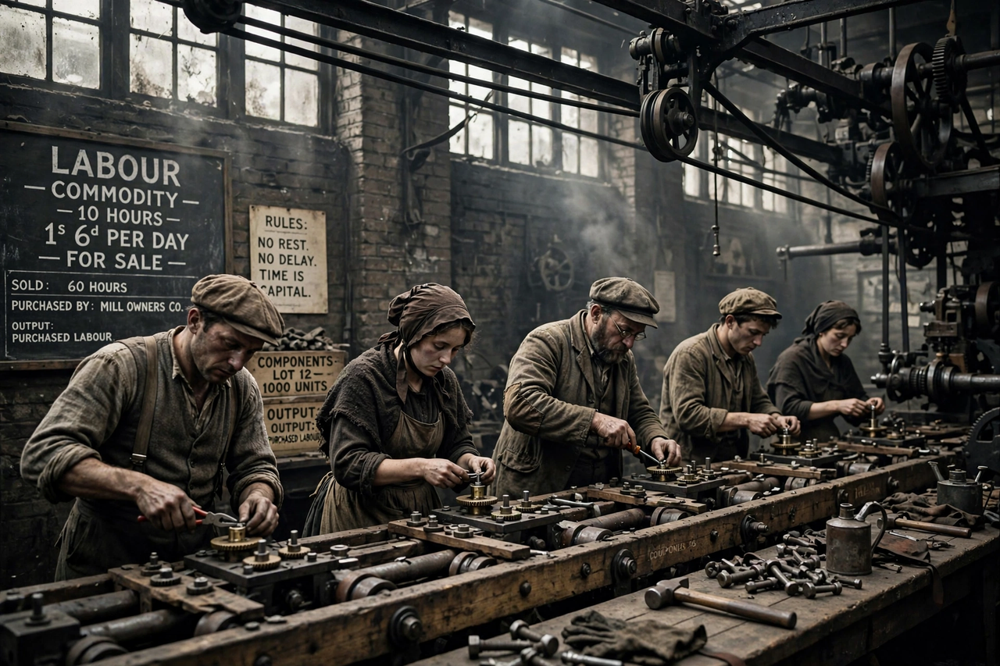

Labour power

Labour power (German: Arbeitskraft) is a concept in Marxist political economy denoting the capacity to work — the aggregate of the mental and physical capabilities embodied in a human being — as distinct from labour itself, the actual exercise of that capacity. Karl Marx introduced the distinction in Capital (1867) as the key to explaining the origin of surplus value.
Definition
Marx defined labour power as "the aggregate of those mental and physical capabilities existing in a human being, which he exercises whenever he produces a use-value of any description." Under capitalism, labour power becomes a commodity: workers who lack independent access to the means of production must sell their capacity to work to a capitalist for a wage, for a definite period, while retaining formal ownership of their own person.
Value of labour power
Like other commodities, the value of labour power is determined by the labour time socially necessary for its production and reproduction — that is, the value of the means of subsistence required to maintain the worker and to raise a new generation of workers, including training costs and a historically and culturally variable element. The wage is the monetary expression (the "price") of this value.
Labour power and surplus value
The distinction between labour power and labour resolves the puzzle of how profit can arise under exchange of equivalents. The capitalist buys labour power at its value but obtains its use for the whole working day: the labour the worker performs can create more value than the value of labour power itself. The difference — surplus value — is the source of profit, interest and rent in Marx's theory. The working day thus divides into necessary labour time, which reproduces the value of labour power, and surplus labour time.
Critiques and development
Classical economists such as Adam Smith and David Ricardo spoke of the value of "labour," which Marx argued conflated the commodity sold with its use and obscured exploitation. Later Marxist and feminist theorists extended the concept, emphasising the unpaid domestic and reproductive labour that produces labour power itself, and analysing how skills, education and migration shape its value. The concept remains central to Marxian economics and labour process theory.
See also
- Das Kapital
- Surplus value
- Karl Marx
- Vilfredo Pareto (a critic of Marxian value theory)